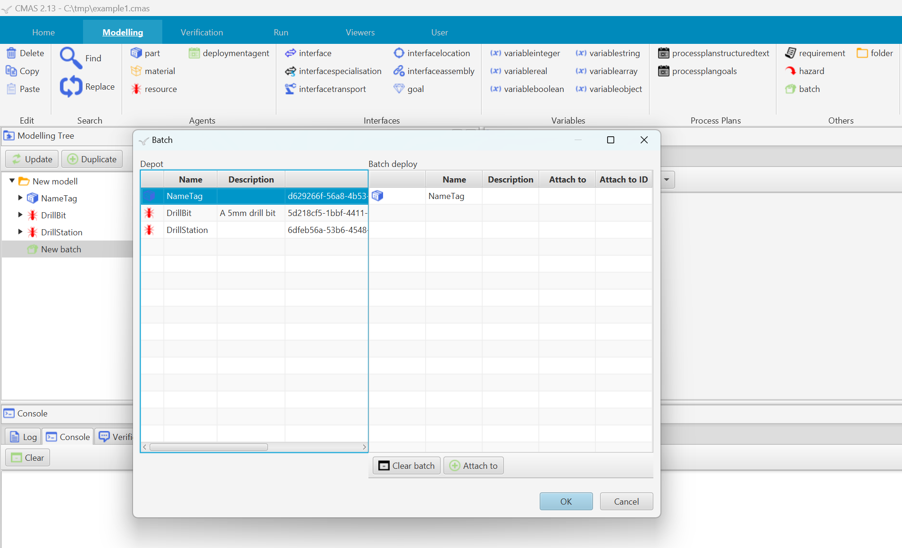
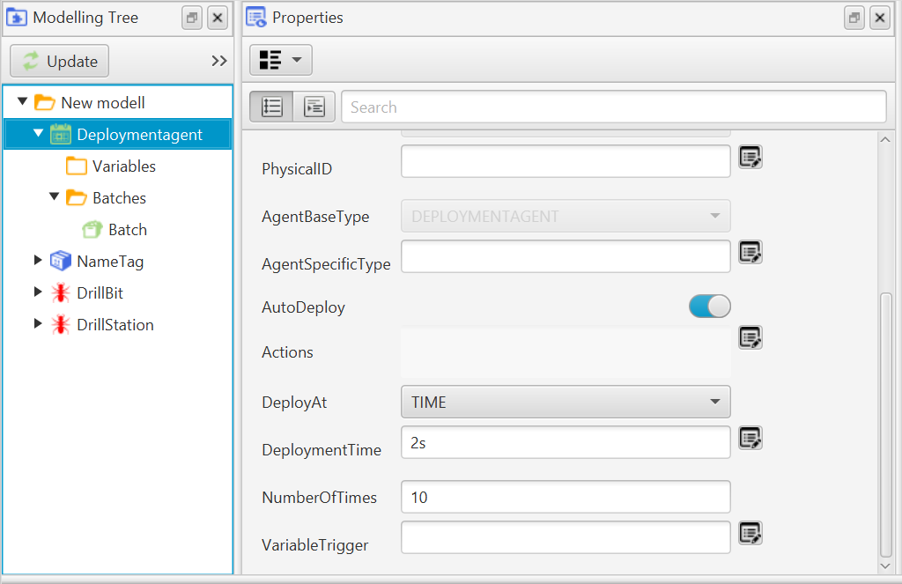
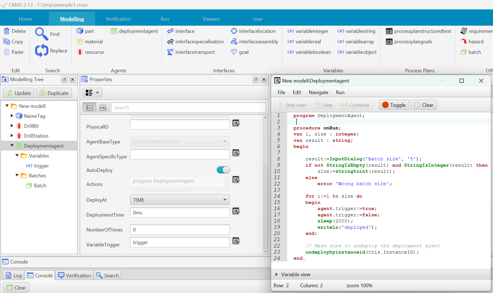

There are several strategies to automate deployment in CMAS.
In CMAS, you can create a batch object to specify which agents to deploy. You can also define whether each deployed agent should be attached to a specific interface during deployment.
Attachments are particularly useful when using the Planner agent, as the planner utilizes these attachments to coordinate transport planning.
This will create a new batch object in the modelling tree.

To add an agent to the batch:
To specify an attachment:
When CMAS is in Run mode, you can deploy a batch object from the Depot. If the batch contains multiple agents, all of them will be deployed. If any attachments were specified during setup, those agents will be attached accordingly.
Note: You can deploy a batch as many times as needed. Each deployment creates new instances of the agents defined in the batch.
Deployment Agents provide more options and control than a standard Batch object.
This will add a new deployment agent to the modelling tree.
A deployment agent has a relation called Batches. Expand the deployment agent node in the modelling tree to view and manage its associated batches.
You can create as many batches as needed here. Batches are created the same way as described in the batches section.

Deployment behavior is controlled using properties available in the Property Viewer.
Defines how many times the deployment process should be repeated across all batches. Once the specified number of repetitions is completed, the deployment agent will automatically undeploy itself.
The name of an agent variable that triggers deployment.
The deployment time is relative to the start or the previous deployment (if multiple).
Determines when deployment should occur. Available options:
If the default behavior of the Deployment Agent is not sufficient, there are several ways to implement custom deployment logic. It is hard to cover all possibilities but two main strategies are explained:
By creating a deployment agent with an agent variable and setting VariableTrigger to that variable, you can control deployment directly from within the agent’s user-defined functions.
Example: Create a deployment agent with a boolean agent variable named trigger, and set VariableTrigger to trigger.
To disable the default deployment logic, set DeploymentTime to 0 and NumberOfTimes to 0.
Next, add agent actions by double-clicking the deployment agent. The following example will ask the user for the batch size and by default triggers five deployments, each separated by 2 seconds. This replicates the behavior of setting DeploymentTime to 2s and NumberOfTimes to 5. However, using a variable trigger allows for more complex, customized deployment logic.
Note: The trigger variable can also be connected to an adapter to receive signals from external systems.

The simplest way to apply local deployment behavior is to open an agent's Actions Editor and implement the onDepot procedure.
Example 1: In this example, we will implement a local deployment behavior on a 'Part' agent. Whenever a Part agent is placed in the depot, the onDepot procedure is triggered. The agent begins by waiting for 2 seconds, then deploys itself by using the deployByInstanceID() function. When a part is deployed, a new part is created in the depot, which repeats the process resulting in continuous, timed deployments.
Example 2: In this example, a dialog is created when the Part agent is placed in the depot. If the user presses the Deploy button, the agent will deploy itself and close the dialog. A new agent will then be created automatically, which in turn shows a new dialog continuing the cycle. If the user presses Stop, the entire runtime environment will shut down.